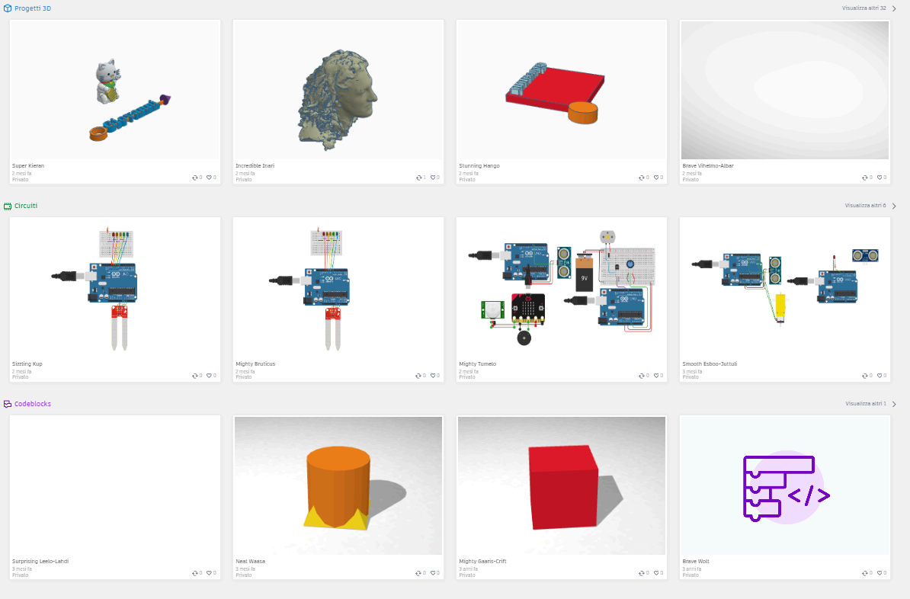

TinkerCAD
3D
Modellazione 3D nel browser, classi, progetti cloud e prime attività didattiche.
Cos’è TinkerCAD
TinkerCAD è un software CAD — Computer-Aided Design, progettazione assistita dal computer — gratuito, sviluppato da Autodesk, la stessa azienda dei CAD professionali come AutoCAD e Fusion, ma pensato apposta per principianti e scuole.
Funziona interamente nel browser su tinkercad.com: niente installazione, niente licenze da acquistare, niente requisiti hardware particolari. Gira anche sui Chromebook e sui computer datati dei laboratori scolastici. Si modella trascinando forme geometriche sul piano di lavoro e regolandone le misure in millimetri: l’idea astratta diventa un oggetto visibile, misurabile e stampabile.
Tre laboratori in uno
Dietro un unico account, TinkerCAD offre tre ambienti di lavoro distinti. Si scelgono dalla dashboard al momento di creare un nuovo progetto e coprono tre competenze diverse: progettare oggetti, capire l’elettronica, programmare.
Modellazione 3D
L’ambiente principale di questo corso: si combinano forme solide e vuote per costruire oggetti reali, con misure precise in millimetri, pronti per l’esportazione in STL e la stampa 3D.
Circuits
Un simulatore di circuiti elettronici: LED, resistenze, batterie, Arduino e Micro:bit si collegano virtualmente e si accendono davvero sullo schermo, senza il rischio di bruciare componenti veri.
Codeblocks
Programmazione a blocchi in stile Scratch che genera forme 3D: un ciclo che ripete «crea un cubo e spostalo» produce una scala. È il ponte fra il coding e la modellazione.
I tre ambienti condividono account e dashboard, ma i progetti restano organizzati per categoria: chi ha già usato Scratch o Micro:bit ritrova in Codeblocks e Circuits concetti familiari.
Il progetto vive nel cloud
L’account TinkerCAD è gratuito e si crea in un minuto con un’email oppure con un account Google o Apple. Da quel momento ogni progetto viene salvato in automatico, modifica dopo modifica: non esiste un pulsante «Salva» perché non serve.
Salvataggio continuo
Il salvataggio automatico riduce il rischio di perdita, ma conviene attendere la sincronizzazione e verificare il progetto nella dashboard prima di chiudere.
Da scuola a casa
Uno studente può iniziare la targhetta sul computer del laboratorio e finirla la sera dal portatile di casa: servono solo un browser e le stesse credenziali.
Creare un account diverso in aula e a casa: i progetti sembrano «spariti», ma in realtà sono nell’altro account. Una sola identità, sempre la stessa.
Dashboard e progetti
Dopo il login si atterra sulla dashboard: la scrivania virtuale che raccoglie tutti i progetti con anteprima, nome e data di modifica, ordinati dal più recente. È da qui che si crea un nuovo lavoro, si riordina l’archivio e si riprende un esercizio interrotto.
Organizzare
Ogni progetto si può rinominare, spostare in cartelle o eliminare. Conviene rinominare subito: TinkerCAD assegna nomi casuali in inglese e dopo dieci progetti diventa impossibile ritrovare «quello della targhetta».
Duplicare
La copia è il punto di partenza ideale per un nuovo esercizio: il docente prepara una base con il piano già impostato e ogni studente ne duplica una versione personale, su cui sperimentare senza paura di rompere l’originale.
Sfide e tutorial
La sezione delle esercitazioni propone attività guidate passo passo con verifica automatica degli obiettivi: perfette come riscaldamento nelle prime lezioni, prima di lanciarsi su un progetto libero.

Classi virtuali
Con l’account docente, TinkerCAD diventa un registro di laboratorio: si crea una classe — per esempio «3B · Lab 3D» — si moderano gli accessi con codice classe e si consultano i progetti degli studenti dalla vista classe, senza raccogliere file via email o chiavette.
Il punto di forza è l’accesso: gli studenti entrano con il codice classe o un link diretto, scegliendo solo un soprannome. Niente email personale, niente registrazione autonoma su servizi di terzi: un vantaggio enorme quando si lavora con minorenni.
La modalità sicura
TinkerCAD è anche una community pubblica, dove chiunque può pubblicare modelli e commentare quelli altrui. Per gli studenti entrati con il codice classe si attiva la modalità sicura: la parte social viene spenta e resta acceso solo il laboratorio.
Cosa resta possibile
Modellare, salvare nel cloud, duplicare i progetti, svolgere sfide e tutorial, consegnare i lavori al docente e riceverne i commenti: tutta l’attività didattica funziona al completo.
Cosa viene bloccato
Condivisione pubblica dei progetti, commenti da utenti esterni, caricamento di immagini e contatti con persone fuori dalla classe: nessuno sconosciuto può raggiungere gli studenti.
La modalità sicura è pensata per i minori che non possono registrarsi autonomamente su servizi di terzi: il docente resta l’unico moderatore di progetti, attività e membri della classe.
Condividere con responsabilità
Un modello 3D originale può essere protetto dal diritto d'autore; licenze, eventuali marchi e condizioni della piattaforma determinano gli usi consentiti. Prima di usare, modificare o redistribuire un progetto altrui, è necessario leggere la licenza associata.
Diritti sul modello 3D
Un modello originale può essere protetto dal diritto d’autore. Prima di pubblicarlo o riusarlo, verifica titolarità e condizioni della piattaforma.
Licenza dichiarata
Registra la licenza insieme al file. Sigle, compatibilità e clausole Creative Commons sono spiegate in CD01.01 · Licenze aperte e OER.
Credito del progetto
Nel portfolio conserva autore, URL, licenza e modifiche apportate: applica al modello 3D il metodo di attribuzione trattato in CD01.01.
Dall’idea all’oggetto
Modellare è solo il primo anello di una filiera che questo corso percorre per intero: si parte da un bisogno concreto — un portachiavi, una targhetta per la porta, un supporto per il cavo — e si arriva a un oggetto fisico da tenere in mano.
Una targhetta semplice
Primo esercizio consigliato: una base rettangolare, un testo in rilievo e un foro per trasformarla in portachiavi. Permette di toccare le operazioni fondamentali — forme, testo, vuoto e unione — in un unico oggetto significativo da stampare o condividere.

Si modella.
Nel prossimo modulo si entra nell’ambiente di lavoro: piano, camera, forme, snap e viste.